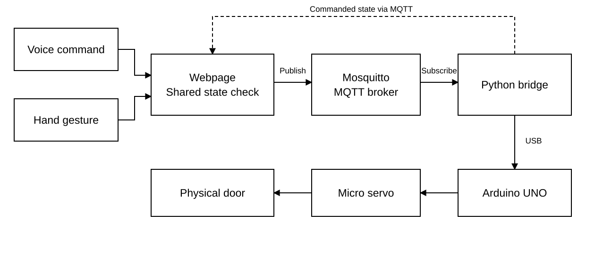
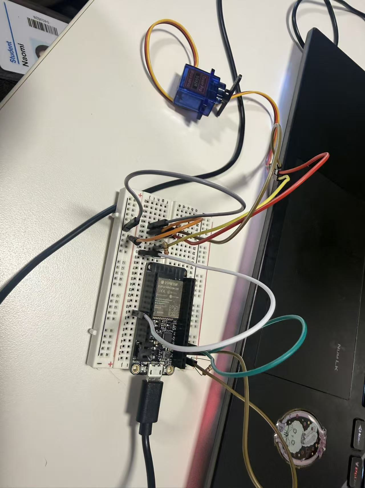
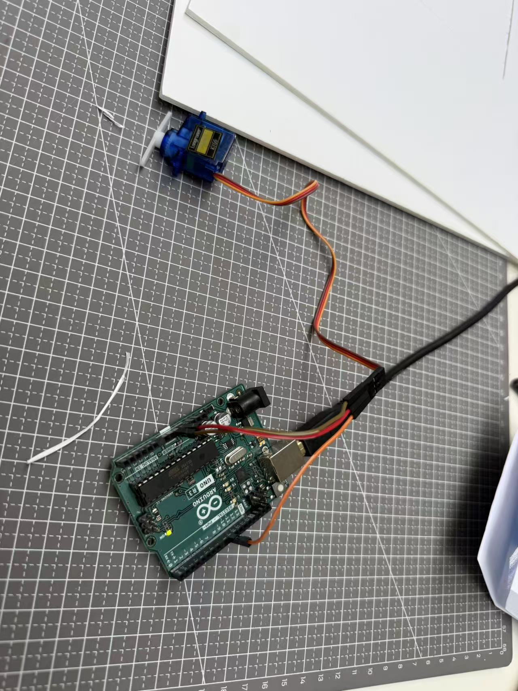
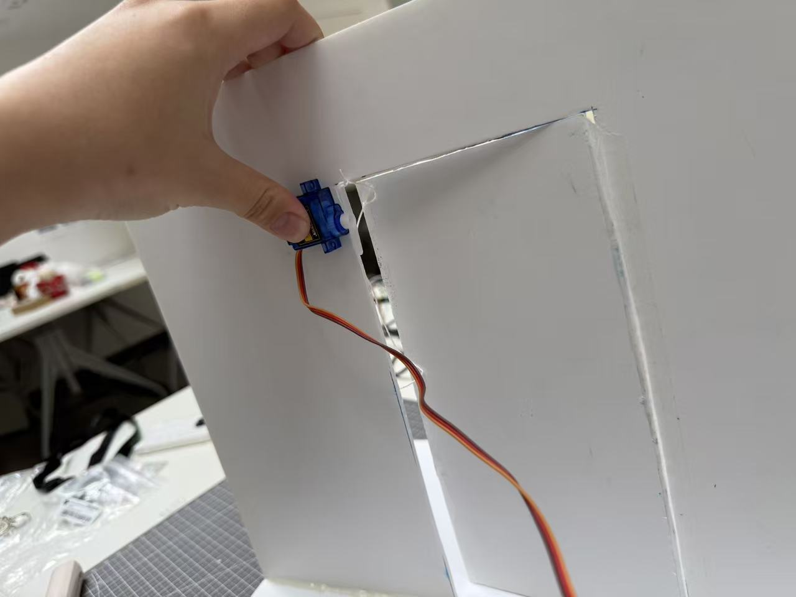
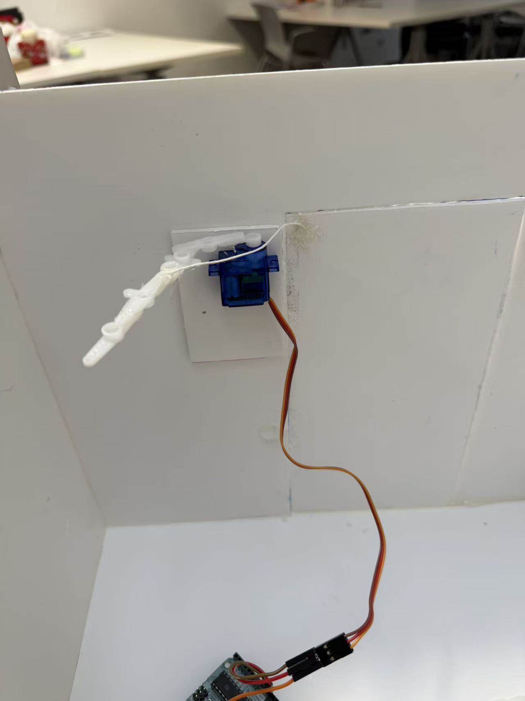

WEEK 2 - Kludging
The Mimic Brush — NYU Shanghai IMA, 2025 uses hand tracking and TensorFlow.js to control a robotic watercolour brush. I liked how movement could control something in the real world.
I wanted to control a machine with my own movements. I chose a door because opening and closing it is familiar. My first idea was to use a micro servo and a rotating pointer. This became the arm that opens and closes my model door.

Both controls operate the same door. The browser receives my gesture or voice command, MQTT sends it to Python, and Python forwards it to the Arduino through USB. The Arduino then moves the servo.

I chose a micro servo because I could control its angle. I first tried an ESP32, but it could not provide the 5V the servo needed. I switched to an Arduino UNO R3, and it worked.
I tested the movement in Arduino IDE before connecting the webpage. The first test used the space bar in the Serial Monitor to switch between 0 and 180 degrees. I then changed it to receive separate OPEN and CLOSE commands. The servo signal uses pin 9.

I used MQTT with a publish/subscribe system. The webpage publishes OPEN or CLOSE, and Mosquitto sends the message to the Python program.
The UNO R3 has no built-in Wi-Fi, so it connects to my computer by USB. Python listens for the MQTT message and sends it to COM4 at 9600 baud. I had to close Arduino's Serial Monitor so Python could use the port.

Making the motor turn was only the first step. I had to find a way for a 180-degree servo to open and close the door. At first, it opened only a small gap, so I adjusted the arm, thread and model.
I tried a straight arm with two ends. One pushed the door open and the other pulled a thread to close it. It often got stuck, so I adjusted the contact point and the thread tension.

The browser uses WebSockets on port 9001, while Python uses MQTT on port 1884. Both connect to the local computer at 127.0.0.1.
I used p5.js and ml5.js for hand tracking. Pinching my thumb and index finger, then moving right to left opens the door. Moving left to right closes it. I also added speech recognition. Saying a sentence with “open” and “door” opens it; “close” and “door” closes it. A sentence containing both commands is ignored.
Voice and gesture share one state, so the same command is not repeated. Python sends the state back through MQTT to keep the display updated. There is no door-position sensor, so the display shows the command sent, not the physical position.

After several tests, I connected the closing thread directly to the opening arm. This made the mechanism simpler, but I still had to check the contact point and thread movement.
The arm later broke in the middle. I tried a bent shape, which made the door shake less and felt more secure than the straight version.

I put the startup steps into start-door-system.bat. It launches Mosquitto, the Python bridge, a local web server and the control page.
After connecting the UNO, I run the launcher and enable the camera and voice on the page. The page shows the camera feed, connection indicators and door state. It also has buttons to record the camera canvas.

The final version uses one bent arm to open the door and pull the thread closed. I can switch between voice and gesture because both controls use the same system.